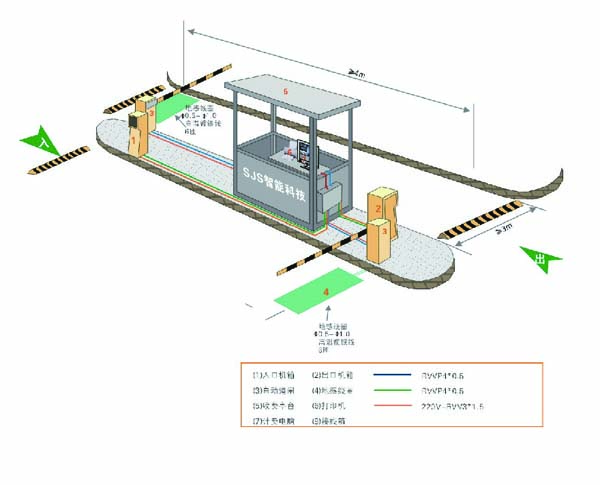

业务范围 Busniess Scope
帕克英停车定位高端，科学系统的将停车场管理规划为：停车场咨询顾问服务，停车场的设计施工，停车场智能设备，停车场的经营管理以及停车场相关增值业务。
帕克英以专业化的经验管理队伍，以丰富的投资，建设，经验管理停车场的经验，以强大的经营顾问团队为核心，一站到位，让您省去四处奔波的时间，为客户提供“零-有-增-最”的一站式服务，最终实现停车场价值最大化。
3.1 停车场咨询顾问服务
停车面积大，车位数量，位置如何规划？停车场建好后怎样既能管理好车辆还能管理好人员？难道这些就没法彻底解决吗？
别担心，一切交给帕克英，为您提供全面的顾问咨询。
1 停车场规划设计咨询
以周围地理环境为切入点，调查周边交通流量，商业氛围，人文环境等。按照外部环境及停车场实际情况对停车需求和停车行为进行分析预测。对出入口交通组织，停车场诱导系统，行人指导，场内环境空间等进行设计，科学施划车位线，安装收费系统，交通诱导标识等，保证停车场建成后的有效利用，减少因设计不当，规划不合理造成的停车场设施，管理等问题。
2 停车场运营制度的建立
帕克英根据客户需求及停车场实际情况建立停车场运营体系文件，管理规章制度，应急预案，从制度层面确保停车场安全顺利运营，防范停车费流失，提高服务品质。
3 从业人员培训

为了使新招聘的员工能够尽快熟悉岗位要求，掌握各项工作流程及应知应会，新员工将通过为期一个月的准入资格培训，经考试合格后方可进入工作岗位实习。
4 停车场运营指导
为提高停车场的管理水平，客户聘请帕克英作为停车场的管理顾问，利用我公司在停车场管理专业领域多年积累的人才，经验，管理模式和管理制度等优势为管理者提供顾问服务，指导本项目管理者的日常管理工作，协助建立高标准的停车场管理队伍，在顾问期内，使本项目的停车场管理步入正轨。
3.2 停车场的设计施工
1 一站式专业设计
一站式整体设计包含了停车场所需的各项建设，使停车场整体规划更为合理，施工过程也更加便捷。选择停车场施工一站式服务，是您打造星级停车场的有利保障。
2 核心竞争力
帕克英一站式服务，参考国内外经验，结合每个公司停车场地理条件不同，运营方式的不同，由专业人员设计出符合该公司停车场特点的独特方案，并格局车主所遇到的各种问题，进行深入研究，设计出让车主能够更方便，快捷，舒适的停车引导设施，智能设施，打造星级停车场是我们服务的核心理念。
从基础设计到智能设计，每一步的设计施工，都由我们的专业人员，进行规划设计，专业的设计，专业的施工，帕克英全程一站式服务，省去了公司筹建过程中的周折，让您的停车场达到星级标准，让您的客户享受星级的停车享受。
3 服务项目
| 1 | 停车场综合交通规划 |
| 2 | 停车场交通安全设施工程 |
| 3 | 停车场环境，诱导工程 |
| 4 | 停车场环氧树脂地坪 |
| 5 | 停车场智能收费系统 |
| 6 | 停车场智能管理系统 |
| 7 | 停车场改造 |

3.3 停车场智能设备
为什么要引进智能停车设备？
在科学技术高速发展的今天，帕克英深知停车行业也需要与时俱进，跟上时代的步伐。随着停车行业规模的扩大，停车场项目的扩大，简单的人工管理已经不能满足客户的管理需求，这就要求引入智能停车设备来辅助人工的管理。
停车智能设备的提供和营销代理
| 1 | 标准型停车场智能收费系统 |
| 2 | 全功能型停车场管理系统 |
| 3 | 手持机收费系统 |
| 4 | 智能诱导系统 |
| 5 | 门禁系统 |
| 6 | 远距离读卡系统 |
| 7 | 巡更系统工程 |
| 8 | 标准交通设施设备 |
新兴停车设备的研发与应用
| 1 | 可折叠环保路锥 |
| 2 | 智能派车系统 |
| 3 | 车辆计数系统 |
| 4 | 立体停车库专用减速电机 |
| 5 | 手持咪表 |
| 6 | 太阳能黄闪灯 |
3.4 停车场运营管理
1 提供代客泊车服务
让您免去了对陌生车场环境不熟悉，长时间需找车位的苦恼；让您免去了新手上路，技术生疏，停车入库耽误时间的苦恼。
2 日常运营管理
临时占道停车场：24小时管理。将车位编号，按号段派驻停车管理员，责任到人。管理员执行三员政策，我们的管理员既是收费员也是“保洁员”，“治安巡逻员”和“城市信息联络员”。
路外停车场：以节约空间和人员成本为出发点，根据每个封闭停车场的占地面积和车流量大小，在每个封闭车辆设立一个或两个出口，并安装智能管理系统；保证24小时不间断为车主服务。
3 帕克英根据路外停车场的特殊性，设计出一套闲置土地的利用方案：
什么是闲置土地？
如单位大院，房前屋后，地铁站外，医院商场周边，底商门前，三包范围，立交桥下，居住小区周边等。
闲置土地如何增值？
闲置土地由于缺乏管理很容易造成脏乱或被非法占用，毫无价值！客户可以将其拥有的闲置土地（只要您的土地能够建设5个以上停车位，周边有停车需求），租赁给我公司经营停车场，客户无需任何投资，由我公司负责整理土地，安装智能化设备，运行收费停车场，客户只需定期收取租金即可。
地下停车场：经过科学的研究，有效节约土地资源的同时，尽可能的创造停车空间，是停车场建设的专业保障，24小时值班监控，24小时不间断全覆盖巡逻，做到万无一失。
3.5 增值业务
我们拥有专业的施工队伍，合理优化的调度机制，可以及时派送人员完成客户委托的项目。我们永远完善的施工设备，从工具模具到所用的相关辅助材料，帕克英坚信没有最好的只有最合适的。一站式服务，多种施工同步进行。行人引导，车位线合理施划，交通设施的安装，整体的设计，免去不同设计公司不同设计风格的烦恼。
1 交通工程施工
我们拥有专业的施工队伍，合理优化的调度机制，可以及时派送人员完成客户委托的项目。我们永远完善的施工设备，从工具模具到所用的相关辅助材料，帕克英坚信没有最好的只有最合适的。一站式服务，多种施工同步进行。行人引导，车位线合理施划，交通设施的安装，整体的设计，免去不同设计公司不同设计风格的烦恼。
2 明星服务项目--划线施工
- 根据不同温度，适度，季节等自然条件，设计匹配施工方案
- 所选漆料可适用于水泥路面，沥青路面已经大部分地下环氧地坪面。
- 服务类型丰富，可提供技术支持，现场指导，具体施工，设备租赁等。
3 秩序安全维护
安全第一，预防为主。自古无规矩不成方圆，当今社会更加注重安全管理，我们拥有经验丰富的秩序维护队伍，防范一切潜在隐患。执行公共执行维护制度和岗位责任制度，让科学完善的制度成为工作的就业指导书。人员思想道德过硬，专业知识技能强。为保证人员素质，我们拥有完善的培训制度以及末尾淘汰制度。
3 汽车相关贴心服务
- 细心统计车主资料，在每天运用公司短消息群发系统对天气和车辆尾号限行情况及时向车主进行播报。
- 停车超过1小时以上的车主可以免费提供简单擦洗车辆的服务
- 定期组织固定车主进行文体活动，联系感情
- 国家法定节假日为车辆挂上一条祝福丝带
- 定期聘请汽车行业专家对车主对车辆的问题进行解答
4 其他相关业务
| 1 | 区域交通组织方案 |
| 2 | 大型活动交通勤务安排 |
| 3 | 大型活动车辆寄存服务 |
| 4 | 承办车辆保险和车位保险 |
| 5 | 小区和公共场所秩序监控 |
| 6 | 代驾服务 |
| 7 | 车位资源合理化统筹 |
| 8 | 地毯式广告招商 |